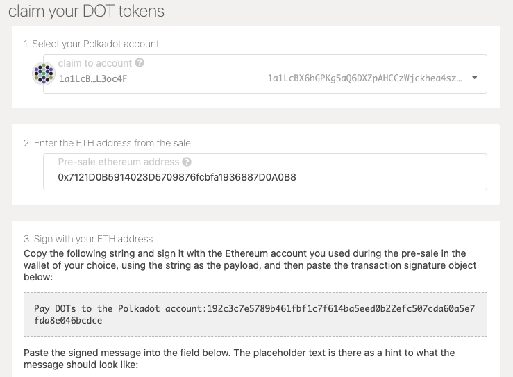
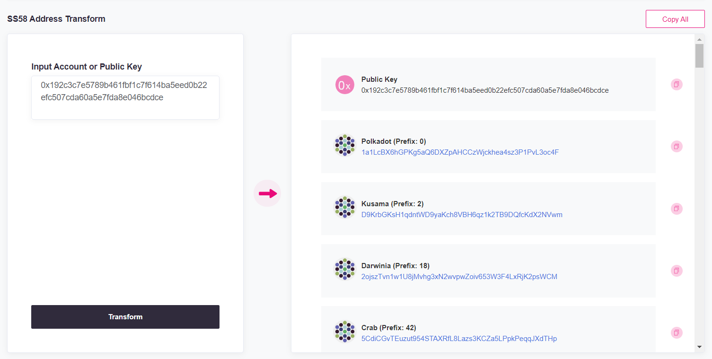
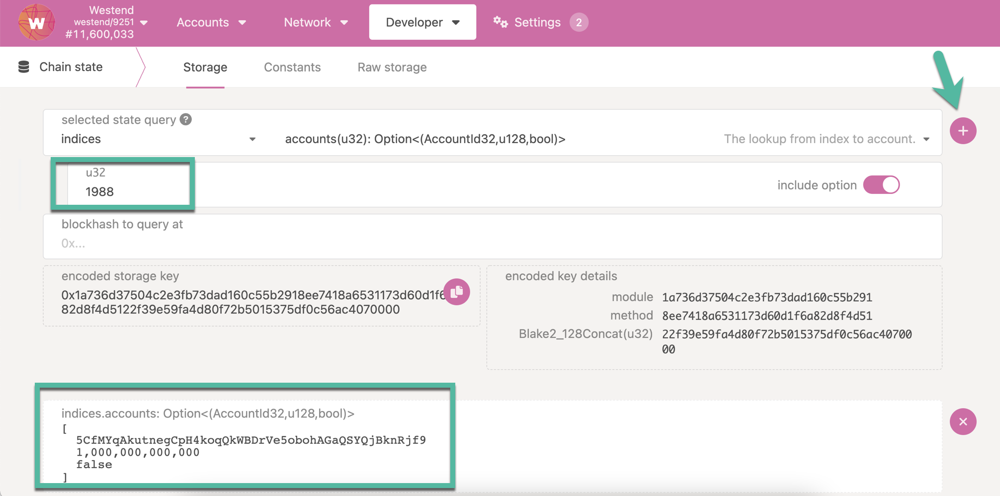
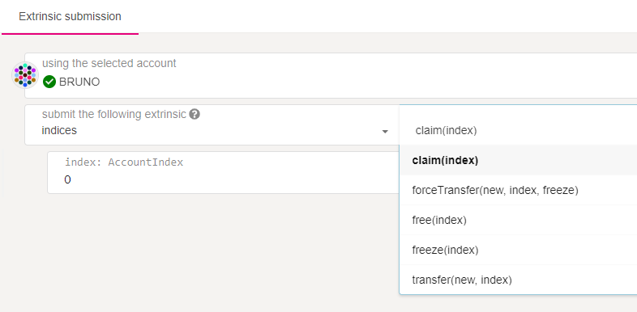
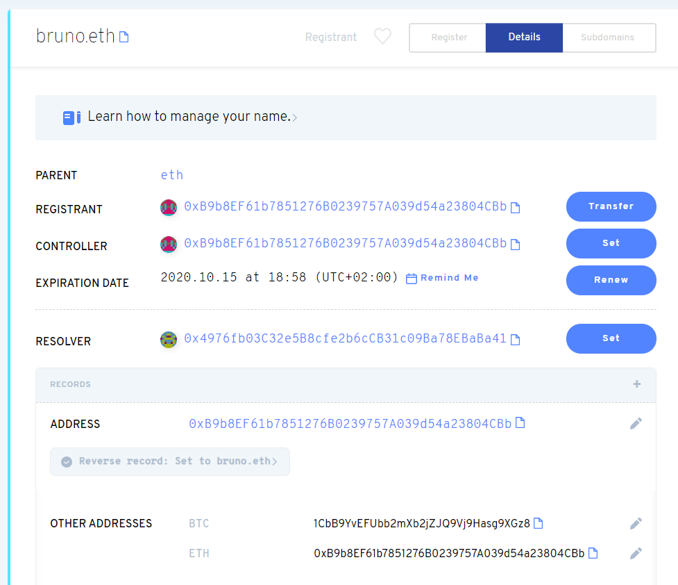
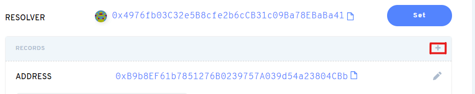
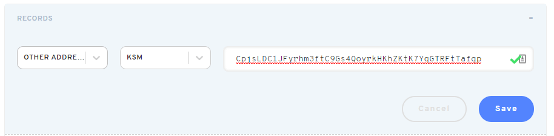
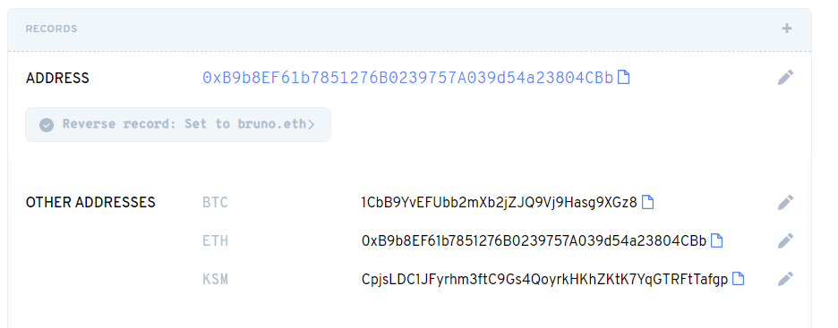

Account (Advanced)
Address Format¶
The address format used in Substrate-based chains is SS58. SS58 is a modification of Base-58-check from Bitcoin with some minor changes. Notably, the format contains an address type prefix that identifies an address belonging to a specific network.
For example:
- Polkadot addresses always start with the number 1.
- Kusama addresses always start with a capital letter, such as C, D, E, F, G, H, J.
- Generic Substrate addresses always start with the number 5.
These prefixes, including how to validate addresses, are embedded in the Substrate SS58 format. Never use regular expressions for address validation.
It's important to understand that different network formats are merely other representations of the same public key in a private-public keypair generated by an address generation tool. As a result, the addresses across Substrate-based chains are compatible if the format is converted correctly.
As of Runtime 28, the default address format is the MultiAddress
type.
This enum is a multi-format address wrapper for on-chain accounts and allows us to describe
Polkadot's default address format to represent many different address types. This includes 20
byte, 32 byte, and arbitrary raw byte variants. It also enhances the original
indices lookup.
Info
Many wallets allow you to convert between formats. Stand-alone tools exist as well; you can find them in the address conversion tools section.
For the Curious: How Prefixes Work¶
The SS58 registry states that:
- Polkadot has an address type of
00000000b(0in decimal). - Kusama (Polkadot Canary) has an address type of
00000010b(2in decimal). - Generic Substrate has
00101010bas the address type (42in decimal).
Because the Base58-check alphabet has no number 0, the lowest value is indeed 1. So 00000000b is
1 in Base58-check. If we try to
decode a
Polkadot address like 1FRMM8PEiWXYax7rpS6X4XZX1aAAxSWx1CrKTyrVYhV24fg, the result is
000aff6865635ae11013a83835c019d44ec3f865145943f487ae82a8e7bed3a66b29d7. The first byte is 00,
which is indeed 00000000 in binary and 0 in decimal and thus matches the address type of
Polkadot.
Let's take a look at Substrate addresses. If we decode
5CK8D1sKNwF473wbuBP6NuhQfPaWUetNsWUNAAzVwTfxqjfr, we get
2a0aff6865635ae11013a83835c019d44ec3f865145943f487ae82a8e7bed3a66b77e5. The first byte is 2a
which when
converted from hex to decimal
is 42. 42 is 00101010 in binary, just as the SS58 document states.
Finally, let's look at Kusama addresses. Decoding CpjsLDC1JFyrhm3ftC9Gs4QoyrkHKhZKtK7YqGTRFtTafgp
gives us 020aff6865635ae11013a83835c019d44ec3f865145943f487ae82a8e7bed3a66b0985 with the first
byte being 02, just as specified. If we try a Kusama address that starts with a completely
different letter, like J4iggBtsWsb61RemU2TDWDXTNHqHNfBSAkGvVZBtn1AJV1a, we still get 02 as the
first byte: 02f2d606a67f58fa0b3ad2b556195a0ef905676efd4e3ec62f8fa1b8461355f1142509. It seems
counterintuitive that some addresses always have the same prefix and others like Kusama can vary
wildly, but it's just a quirk of Base58-check encoding.
Address Conversion Tools¶
You can use the tools below to convert any SS58 address for any network for use on different networks
How to Verify a Public Key's Associated Address¶
You can verify your public key's associated address through a series of inspection steps, where the key is a base-16 (hexadecimal) address.
Using Subkey to Retrieve Public Key from SS58 Address¶
This is to showcase that the SS58 address is based on the public key (aka "Account ID")
The Subkey Tool's The
Inspecting Keys
section explains how to use the inspect command to recalculate your key pair's public key and
address.
Start by inspecting your account's Polkadot address by running the inspect command against your account's address:
$ subkey inspect 1a1LcBX6hGPKg5aQ6DXZpAHCCzWjckhea4sz3P1PvL3oc4F
Public Key URI `1a1LcBX6hGPKg5aQ6DXZpAHCCzWjckhea4sz3P1PvL3oc4F` is account:
Network ID/version: polkadot
Public key (hex): 0x192c3c7e5789b461fbf1c7f614ba5eed0b22efc507cda60a5e7fda8e046bcdce
Account ID: 0x192c3c7e5789b461fbf1c7f614ba5eed0b22efc507cda60a5e7fda8e046bcdce
SS58 Address: 1a1LcBX6hGPKg5aQ6DXZpAHCCzWjckhea4sz3P1PvL3oc4F
Take note of the hexadecimal string for "Public key (hex)". This is your account's public key.
Running the inspect command on your public key along with the --public parameter the SS58
address for the default network (substrate) is returned.
$ subkey inspect --public 0x192c3c7e5789b461fbf1c7f614ba5eed0b22efc507cda60a5e7fda8e046bcdce
Network ID/version: substrate
Public key (hex): 0x192c3c7e5789b461fbf1c7f614ba5eed0b22efc507cda60a5e7fda8e046bcdce
Account ID: 0x192c3c7e5789b461fbf1c7f614ba5eed0b22efc507cda60a5e7fda8e046bcdce
Public key (SS58): 5CdiCGvTEuzut954STAXRfL8Lazs3KCZa5LPpkPeqqJXdTHp
SS58 Address: 5CdiCGvTEuzut954STAXRfL8Lazs3KCZa5LPpkPeqqJXdTHp
Using the --network flag, you can define the network that you would like to inspect, where the
SS58 address will be based on that network. Now, running the inspect command with
--network polkadot return your original Polkadot address, thus verifying the public key.
$ subkey inspect --network polkadot 5CdiCGvTEuzut954STAXRfL8Lazs3KCZa5LPpkPeqqJXdTHp
Public Key URI `5CdiCGvTEuzut954STAXRfL8Lazs3KCZa5LPpkPeqqJXdTHp` is account:
Network ID/version: polkadot
Public key (hex): 0x192c3c7e5789b461fbf1c7f614ba5eed0b22efc507cda60a5e7fda8e046bcdce
Account ID: 0x192c3c7e5789b461fbf1c7f614ba5eed0b22efc507cda60a5e7fda8e046bcdce
Public key (SS58): 1a1LcBX6hGPKg5aQ6DXZpAHCCzWjckhea4sz3P1PvL3oc4F
SS58 Address: 1a1LcBX6hGPKg5aQ6DXZpAHCCzWjckhea4sz3P1PvL3oc4F
You will notice that the Subkey Tool recognizes the correct address network and returns the associated public key. The public key is returned as a hexadecimal string (i.e. prefixed with "0x"). For both SS58 addresses, the same public key is returned.
Address Verification¶
Consider the following example:¶

If you are comfortable enough to distinguish between each account parameter, you can prefix the public-key string with "0x" on your own:
From:
Pay DOTs to the Polkadot account:192c3c7e5789b461fbf1c7f614ba5eed0b22efc507cda60a5e7fda8e046bcdce,
we prefix the address by "0x" ->
0x192c3c7e5789b461fbf1c7f614ba5eed0b22efc507cda60a5e7fda8e046bcdce.
Using the handy subscan tool, you can verify both address associations to your public key. Copy your public key into the "Input Account or Public Key" textbox and click "Transform" at the bottom. On the right-hand side, the addresses for Polkadot and Substrate that are returned based on your public key should match the ones you inspected.

Note
You may have to scroll down to the bottom of the menu to find the Substrate address based on the menu listings. You will notice that many networks that also use the same Substrate address.
You can verify your public key verification by recalling that Polkadot addresses start with a '1', whereas Substrate addresses generally start with a '5' (Kusama addresses start with a capital letter). See Addresses for more details.
Furthermore, the Utility Scripts can be referenced for how the verification is performed: pubkeyToAddress.js demonstrates how a single public key interprets a Polkadot, Substrate, or Kusama address.
Portability¶
Portability is the ability to use a mnemonic phrase or seed across multiple wallets.
Most wallets generate a mnemonic phrase for users to back up their wallets and generate a private key from the mnemonic. Not all wallets use the same algorithm to convert from mnemonic phrase to private key, which affects the ability to use the same mnemonic phrase in multiple wallets. Wallets that use different measures will arrive at a different set of addresses from the exact mnemonic phrase.
Not all wallets use the same algorithm to convert from mnemonic phrase to private key
Subkey and Polkadot-JS based wallets use the BIP39 dictionary for mnemonic generation, but use the entropy byte array to generate the private key, while full BIP39 wallets (like Ledger) use 2048 rounds of PBKDF2 on the mnemonic. The same mnemonic may generate different private keys on other wallets due to the various cryptographic algorithms used. See Substrate BIP39 Repo for more information.
Portability depends on several factors:
- Derivation path
- Mnemonic format
- Seed derivation
- Signature scheme
To use the exact mnemonic across multiple wallets, ensure they follow compatible methods for generating keys and signing messages. If you are still looking for understandable documentation, contact the project maintainers.
| Mnemonic Format | Derivation Path | Seed Derivation | Signature Support | |
|---|---|---|---|---|
| Polkadot-JS Extension | Standard | User-Defined | BIP32 | sr25519 |
| Polkadot-JS Apps | Standard* | User-Defined | BIP32 | sr25519, ed25519, secp256k |
| Ledger | BIP39 | BIP44† | BIP32‡ | ed25519§ |
| Subkey | Standard* | User-Defined | BIP32 | sr25519, ed25519, secp256k1 |
* Ed25519 keys have limited compatibility with BIP39.
‡ Ed25519 and BIP32 based on Khovratovich
§ Sr25519 planned
Derivation Paths¶
If you want to create and manage several accounts on the network using the same seed, you can use derivation paths. We can think of the derived accounts as child accounts of the root account created using the original mnemonic seed phrase.
Soft and Hard Derivation¶
A soft derivation allows someone to potentially "go backward” to figure out the initial account's private key if they know the derived account's private key. It is also possible to determine that different accounts generated from the same seed are linked to that seed. A hard derivation path does not allow either of these - even if you know a derived private key, it's not feasible to figure out the private key of the root address, and it's impossible to prove that the first account is linked with the second. These derivation methods have their use cases, given that the private keys for all the derived accounts are fully secure. Unless you have a specific need for a soft derivation, it is recommended to generate the account using a hard derivation path.
Many Polkadot key generation tools support hard and soft derivation. For instance, if you intend to create an account to be used on the relay chain, you can derive a hard key child account using // after the mnemonic phrase.
'caution juice atom organ advance problem want pledge someone senior holiday very//0'
and a soft key child account using / after the mnemonic phrase
'caution juice atom organ advance problem want pledge someone senior holiday very/0'
If you want to create another account using the Polkadot chain using the same seed, you can change
the number at the end of the string above. For example, /1, /2, and /3 will create different
derived accounts.
You can use any letters or numbers in the derivation path as long as they make sense to you; they do
not have to follow any specific pattern. You may combine multiple derivations in your path, as well.
For instance, //bill//account//1 and //john/polkadot/initial are both valid. To recreate a
derived account, you must know both the seed and the derivation path, so you should either use a
well-defined sequence (e.g. //0, //1, //2...) or be sure to write down any derivation paths you use.
See the Subkey documentation for details and examples of derivation path formats. The Polkadot-JS Apps and Extension and Parity Signer support custom derivation paths using the same syntax as Subkey.
Some wallets will automatically add derivation paths to the end of the generated mnemonic phrase.
This will generate separate seeds for different paths, allowing separate signing keys with the same
mnemonic, e.g. <mnemonic phrase>//polkadot and <mnemonic phrase>//kusama. Although you may
correctly save the mnemonic phrase, using it in another wallet will generate the same addresses only
if both wallets use the same derivation paths.
Polkadot and Kusama both have paths registered in the BIP44 registry.
Warning
You must have the parent private key and the derivation path to arrive at the key for an address. Only use custom derivation paths if you are comfortable with your knowledge of this topic.
Password Derivation¶
There is an additional type of derivation called password derivation. On Polkadot you can derive a password key account using /// after the mnemonic phrase
'caution juice atom organ advance problem want pledge someone senior holiday very///0'
In this type of derivation, if the mnemonic phrase leaks, accounts cannot be derived without the
initial password. In fact, for soft- and hard-derived accounts, if someone knows the mnemonic phrase
and the derivation path, they will have access to your account. For password-derived accounts, the
password is applied on the derivation path. You can know the mnemonic phrase and the derivation
path, but without the password, it is impossible to access the account. In mathematical terms, if we
have a written derivation path and a password, we can calculate the real derivation path as
f(written derivation path, password), where f is a function. We can then calculate the
account key pair using f(seed, real derivation path). Unlike hard and soft derivations that can
be mixed, only a single password should be specified per derivation.
Info
Password-derived account are as secure as the chosen password.
Account Derivation on Ledger Live¶
Ledger Live will only show the main account with BIP44 path 44'/354'/0'/0'/0'. This means that if you created a derived account with a derivation path 44'/354'/0'/0'/1' on a wallet or extension, it will not be displayed on the Ledger Live App. Consequently, it is not possible to transact with derived accounts using the Ledger Live App, but it is possible to do so using Polkadot-JS. Check the accounts page for more information about derived accounts and derivation paths.
Note that you cannot import Kusama Ledger accounts in Ledger Live. To see Kusama account balances, you must import your ledger account into a wallet.
Account Derivation on Subkey and Polkadot Vault¶
The Subkey tool and Polkadot Vault App use the following Polkadot Standard Hard Derivation scheme:
//networkas the primary account fornetwork, named according tonetwork's named chain specification//network//0,//network//1, ... as the secondary high-security accounts fornetwork
For example, the Vault app will generate a new account from a SEED PHRASE, and for each network
will create a derived child account from that seed. For the default networks Polkadot, Kusama and
Westend the derivation path will be:
SEED PHRASE//polkadotfor Polkadot, withSEED PHRASE//polkadot//0as the first secondary high-security accountSEED PHRASE//kusamafor Kusama, withSEED PHRASE//kusama//0as the first secondary high-security accountSEED PHRASE//westendfor Westend, withSEED PHRASE//westend//0as the first secondary high-security account
Additionally, although it is not strictly necessary, users can adopt the following good practice scheme:
//network//pubas the primary high-security public account fornetwork(the one the user is happy to be associated with their "real" ID)//network//pub//0,//network//pub//0, ... as the secondary high-security public accounts fornetwork//network//hotas the primary low-security account fornetwork(the one whose secret key the user exports from the Vault app to carry on an internet-connected device)//network//hot//0,//network//hot//1, ... as the secondary low-security accounts fornetwork
Info
For more information about account derivation best practices, see this post on the Polkadot Forum.
System Accounts¶
As the word suggests, system accounts are used by the system. They are used, for example, for the treasury, crowdloans, and nomination pools. From the point of view of the runtime, these accounts are like any other account on-chain. These special system accounts are just public keys, with the private key being unknown (and unattainable). So, that means that only the pallet itself can interact with this account. These accounts can never issue a signed extrinsic since they do not have a private key.
Explore the main system accounts below.
Treasury account address - 13UVJyLnbVp9RBZYFwFGyDvVd1y27Tt8tkntv6Q7JVPhFsTB
Treasury account address - F3opxRbN5ZbjJNU511Kj2TLuzFcDq9BGduA9TgiECafpg29
You can view the existing system accounts on Subscan.
Let us take a look at how system accounts are generated under the hood. For instance, to generate
the treasury account, the raw bytes of the strings "modl" and "py/trsry" are combined to create the
AccountID. For more information, check the post on Substrate StackExchange on
Treasury accounts.
Similarly, to generate the crowdloan account, the raw bytes of the strings "modl" and "py/cfund"
along with the fund index are combined to create the AccountID. Similar logic applies to
nomination pool and parachain accounts as well.
Indices¶
Polkadot addresses can have indices. An index is like a short and easy-to-remember version of an address. Claiming an index requires a deposit released when the index is cleared. Any index can be claimed if it is not taken by someone else.
But what if an account gets reaped, as explained above? In that case, the index is emptied. In other words, the slot frees up again, making it available for anyone to claim. It is possible to freeze an index and permanently assign it to an address. This action consumes a deposit, and the index will be permanently bound to the address with no option to release it.
Lookup Account Index on-chain
When someone shares their account index, their actual account address on-chain can be looked up through Polkadot-JS Apps UI > Developer > Chain state > Storage and selecting state query on indices pallet for the account corresponding to the index.
Here is an example snapshot that shows how to lookup the corresponding account address of the account index 1988 on Westend network (Polkadot Test Network), using Polkadot-JS Apps UI. The output shows the account address, deposit amount, and a boolean flag indicating whether this is claimed permanently.

Submit a claim extrinsic to the indices pallet to register an index. The easiest way to do this
is via Polkadot-JS UI through the Developer -> Extrinsics menu:

To find available indices to claim on Polkadot or Kusama, this helper tool may come in handy.
For keeping the index permanently, you can follow up with a freeze extrinsic as mentioned above.
Creating Accounts with Subkey¶
Subkey is recommended for technically advanced users comfortable with the command line and compiling Rust code. Subkey lets you generate keys on any device that can compile the code. Subkey may also be useful for automated account generation using an air-gapped device. It is not recommended for general users. Follow the instructions in the Subkey documentation.
Info
For guidelines about how to create an account using Subkey, see this video tutorial and visit this support article.
Using ENS with DOT/KSM accounts¶
ENS (Ethereum Name Service) is a distributed and open system of smart contracts on the Ethereum
blockchain which allows users to claim domain names like bruno.eth.
The ENS is equivalent to a DNS (Domain Name System) domain. Instead, it offers a decentralized and secure way to translate text via smart contracts. Supporting wallets can then allow senders to input ENS domains instead of long and unwieldy addresses. This prevents phishing, fraud, and typos and adds a layer of usability to the regular wallet user experience.
Note
You will need an ENS name and an Ethereum account with some ether to follow along with this guide. To register an ENS name, visit the ENS App or any number of subdomain registrars like Nameth. Note that if you're using an older ENS name, you should make sure you're using the new resolver. Visiting the ENS App will warn you about this. You will also need some way to use your Ethereum address - following this guide on a personal computer is recommended. Wallets like Frame and Metamask are safe and will make interacting with the Ethereum blockchain through your browser very easy.
Despite living on the Ethereum blockchain, the ENS system has multi-chain support. In this guide, you'll go through the process of adding a KSM and DOT address to ENS. We cover both KSM and DOT to show two different approaches.
Note
DOT can currently only be added using the Resolver method. KSM can be added through both methods are described below.
This guide is also available in video format on YouTube.
Adding via the UI¶
The ENS App allows an ENS domain owner to inspect all records bound to the domain, and to add new ones.

In the example above, the domain bruno.eth has an Ethereum and a Bitcoin address attached. Let's
attach a KSM account. First, click the [+] icon in the Records tab.

Then, pick "Other Addresses", "KSM", and input the Kusama address:

After clicking Save, your Ethereum wallet will ask you to confirm a transaction. Once processed, the record will show up on the domain's page:

The exact process applies to adding your DOT address.
Once the transaction is confirmed, your address will be bound to your ENS domain.
Wallet Support¶
There is no wallet support for ENS names for either KSM or DOT at this time, but the crypto accounting and portfolio application Rotki does support KSM ENS resolution.
Relevant links¶
- ENS docs
- ENS Multi-chain announcement
- Address encoder
- Namehash calculator
- Address to pubkey converter
Transferring Polkadot-JS Apps Accounts/Addresses From One Computer to Another¶
Caution
This will overwrite existing accounts with the same pubkey on your new computer. This generally should not make a difference (since it can still access the same account), but it might if you have e.g. an account that was stored externally in the extension on the old computer but was created directly in the browser on the new one.
This has been tested on Brave and Chrome, but not other browsers.
- Go to Polkadot-JS Apps
- Go to JavaScript console on the browser (Available in Developer Tools)
- Type in the command:
JSON.stringify(localStorage)
- Copy and paste the returned string to a text editor and save the file.
- Check that the string you pasted begins and ends with a tick mark ('). If not, add one to the beginning and end.
- Save and send that file with the copied string to the new computer.
- On the new computer, go to Polkadot-JS Apps
- Open the Javascript console on the browser (Available in Developer Tools)
- Set a variable raw equal to the string from the text file
raw = ... copy-pasted json from original computer ...
- Run the following code on the console:
accounts = JSON.parse(raw);
for (var key in accounts) {
if (accounts.hasOwnProperty(key)) {
val = JSON.stringify(accounts[key]).replace(/\\/g,'').slice(1,-1);
console.log(key + " -> " + val);
localStorage.setItem(key, val);
}
}
- Refresh Polkadot-JS App browser and check the Accounts and Addresses pages. All of your accounts and addresses should now be available.